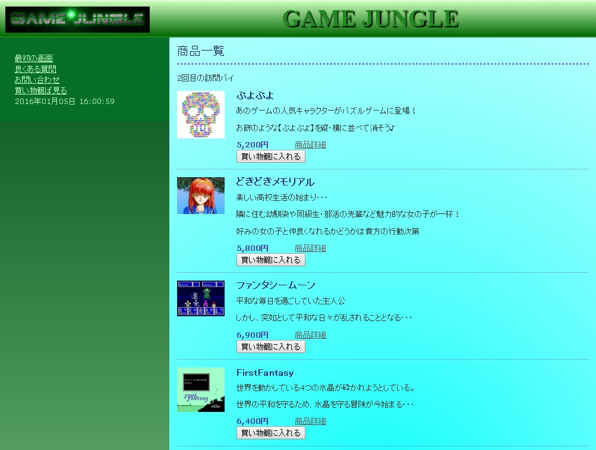

田中琢磨 Tanaka Takuma
Profile
2015年11月：Ruby Association Certified Ruby Programmer Silver version 2.1 合格
2015年11月：Webクリエイター能力認定試験エキスパート 合格
前職までは主にコールセンターやヘルプデスクでの業務に携わっており、リーダー経験・SV経験もあるため、スタッフ管理・工程管理などに長け、責任感が強い。
退職後はもともと興味があったプログラミングの世界に入らんと、職業訓練校に入校。
情報処理知識と Ruby や Ruby on Rails による Webサービス開発、Web サイト制作、データベース技術、スマホアプリ制作を勉強。
現在もスマホアプリ等を勉強しながら鋭意作成中。
Skill
HTML ・・・・・・・ ★★★★★
CSS ・・・・・・・・ ★★★★☆
Ruby ・・・・・・・ ★★★★★
Ruby on Rails ・・・ ★★★☆☆
Photosyop ・・・・・ ★★☆☆☆
Illustrator ・・・・ ★★☆☆☆
Product
架空の文具サイト
 職業訓練校にて、指示により1日で作成。
職業訓練校にて、指示により1日で作成。
1ページでのレイアウトとの指示もあり、バックグラウンドをグラデーションにすることにより、ページ内での変化を付けた。
また、QRコードを読み込むことで地図を表示できるようにし、スマホでのMAP確認も簡単にした。
架空のショッピングサイト

職業訓練校にて2週間で作成。
各商品の詳細情報へのリンク及び詳細情報でのコメント投稿・表示を可能にした。
またコメントが投稿されることで評価平均点も自動的に更新される。
顧客側の操作に関してはほぼ予定通りに出来上がったが、時間切れにより管理者側の操作に不具合が残る。